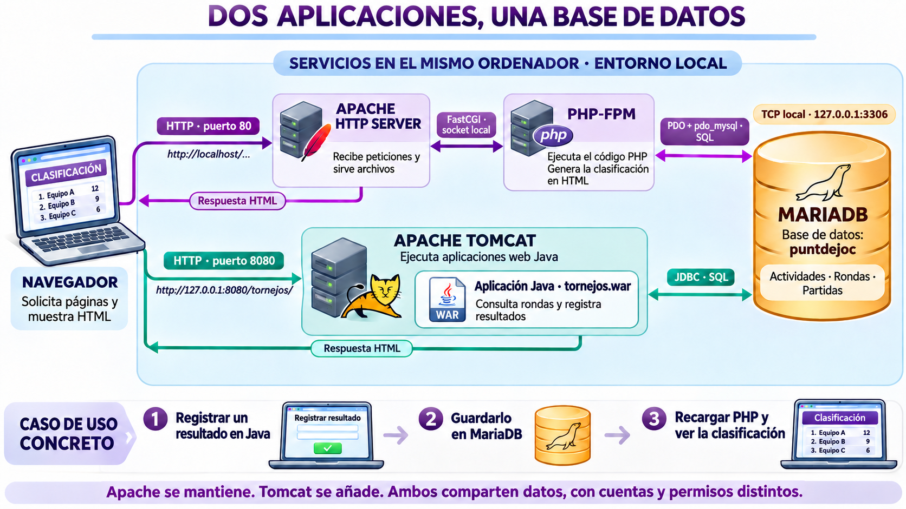

AEA2 · Desplegar Java
5. Java y Tomcat
Del programa Java al servicio web: entorno, artefacto, contexto y configuración.
1. Añadimos Tomcat; Apache se mantiene
Apache HTTP Server sirve el portal PHP con ayuda de PHP-FPM. Para desplegar una aplicación web Java incorporamos Tomcat, un contenedor de servlets y páginas JSP con servidor HTTP propio. No implementa por sí solo toda la plataforma Jakarta EE.
| Servicio | Función en este despliegue | Acceso local |
|---|---|---|
| Apache + PHP-FPM | Portal PHP y clasificación. | http://localhost/… · puerto 80 |
| Tomcat | Aplicación Java de gestión de torneos. | http://127.0.0.1:8080/tornejos/ |
| MariaDB | Datos compartidos; cuentas distintas para PHP y Java. | 127.0.0.1:3306 |

El navegador puede acceder directamente a Tomcat. La integración con Apache se trabajará más adelante; ahora cada servidor tiene su puerto.
2. Cuatro conceptos para desplegar
| Concepto | Qué debes reconocer |
|---|---|
| JVM y JDK | La JVM ejecuta Java; el JDK incluye herramientas de desarrollo. El Java utilizado por el servicio Tomcat puede ser distinto del que muestra tu terminal. |
| Tomcat y compatibilidad | Referencia: Tomcat 10.1 con Java 17 o 21. Tomcat 10.1 implementa Jakarta Servlet 6.0; los paquetes jakarta.servlet no son intercambiables sin adaptación con javax.servlet de aplicaciones antiguas. |
| WAR y contexto | Un WAR empaqueta una aplicación web, recursos y dependencias. En el despliegue habitual, tornejos.war se publica bajo /tornejos/. WEB-INF contiene configuración y bibliotecas que no deben servirse como archivos públicos. |
| Configuración y logs | La aplicación necesita dirección de MariaDB, cuenta y contraseña. Los recibe desde la configuración externa de Tomcat; los errores de despliegue y ejecución se investigan en sus registros. |
El WAR proporcionado incluye una JSP: Tomcat la traduce y compila antes de ejecutarla. El navegador recibe HTML, no el código Java. El controlador JDBC incluido permite que Java se conecte a MariaDB; la extensión PDO de PHP no sirve para Java.
3. Una comprobación de extremo a extremo
El navegador solicita el contexto, Tomcat ejecuta la aplicación y esta consulta MariaDB mediante JDBC. Al registrar un resultado, se valida la petición y se actualiza la partida. Al recargar el portal PHP, este lee ese mismo dato y recalcula la clasificación.
Idea clave
Compartimos los datos, no el entorno de ejecución. PHP-FPM ejecuta PHP; Tomcat ejecuta Java. Cada aplicación necesita su propia configuración y permisos.
Primero verifica servicio y puerto; después contexto y despliegue; finalmente configuración y consulta a MariaDB. Un 404 puede indicar ruta o contexto incorrecto; un fallo de datos requiere consultar los logs, no reinstalar el servidor.
Abrir encargo 4 · Aplicación Java
Referencia: compatibilidad de Tomcat y despliegue de aplicaciones.